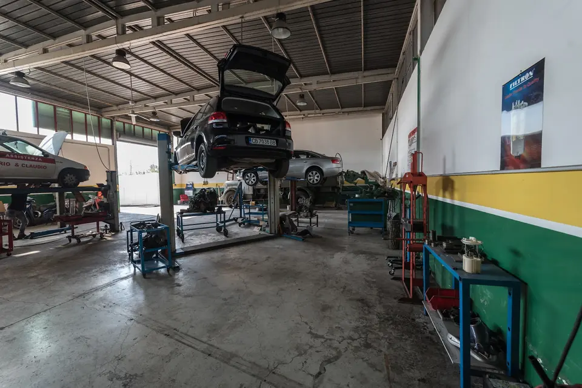
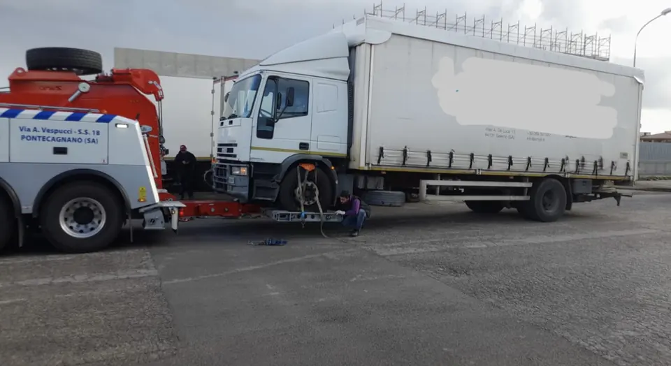

Ho l'enorme piacere di condividere la mia esperienza che ho avuto con Marco Voto. Ho avuto la brutta disavventura di fermarmi con la macchina ad un distributore a Pontecagnano. Il benzinaio ha chiamato Marco che è venuto subito recuperarmi con il carroattrezzi. Effettuata subito la diagnosi il problema era lo sfaldamento della cinghia di distribuzione bagnata ad olio. Io dovevo arrivare in un villaggio a Taranto. Prontamente ha chiamato il noleggiatore di auto che è proprio accanto alla sua officina. Ho noleggiato la macchina per una settimana e al ritorno, sempre di domenica ho trovato la macchina con cinghia nuova e tutto nuovo!! Ringrazio infinitamente Marco per la sua gentilezza, disponibilità, cortesia e anche correttezza e onestà per il prezzo pattuito. Peccato mi è lontano altrimenti sarebbe stato il mio meccanico di fiducia. Grazie ancora per aver salvato la mia vacanza, grazie anche a nome di mia figlia, di mio padre ultranovantenne e della mia amica! Continua così!! 💪
Vota Marco Soccorso Stradale e Officina
Officina e soccorso stradale a Pontecagnano Faiano, in Via Amerigo Vespucci, km 67/400.
4,782 recensioni GoogleVia Amerigo Vespucci, km 67/400, 84098 Pontecagnano Faiano, SA
4,7 su Google · 82 recensioni
Serve un preventivo?
Via Amerigo Vespucci, km 67/400, 84098 Pontecagnano Faiano, SA
Lun–Dom 24:00–24:00
Le foto
Le 3 foto che Vota Marco Soccorso Stradale Officina Meccanica Salerno ha caricato sulla sua scheda Google.


Servizi
Quelli che Vota Marco Soccorso Stradale Officina Meccanica Salerno indica sulla sua scheda Google.
Officina autoriparazioni
Dalla scheda Google dell'attività.
Meccanico e assistenza automobili
Dalla scheda Google dell'attività.
Servizio di traino
Dalla scheda Google dell'attività.
Servizi indicati come categorie sulla scheda Google dell'attività (lettura del 26/10/2026). Per tutto il resto, chiamate.
Cosa dicono i clienti
4,7 su 5 · 82 recensioni su Google. Qui sotto alcune, riportate senza modifiche (i nomi sono abbreviati).
Professionale, affidabile, efficiente e celere! Durante il nostro viaggio dal Cilento verso Napoli abbiamo avuto un problema all'alternatore della nostra vettura e pertanto abbiamo dovuto chiamare il soccorso. Il signor Enea ci ha assistito col carrattrezzi ed il giorno dopo abbiamo avuto la vettura riparata per poter continuare il nostro viaggio. Grazie per la squisita assistenza e risolutezza.
Rimasta ferma di notte con la macchina in una situazione di forte ansia, ho ricevuto un'assistenza stradale immediata. Ho trovato un supporto davvero eccezionale in questa officina. Enea si è occupato del soccorso stradale in modo impeccabile e con estrema professionale. Oltre alla straordinaria gentilezza iniziale, Enea e il team sono stati super attenti e premurosi nel tenermi aggiornata con trasparenza su ogni singola fase della riparazione. L'auto è stata riconsegnata perfetta e pronta in pochissimi giorni. Trovare persone così umane e competenti in un momento di difficoltà fa davvero la differenza. Grazie ancora di cuore!"
Rimasto fermo in autostrada, ho trovato un supporto eccezionale in questa officina. Enea si è occupato del soccorso stradale in modo impeccabile, accompagnandomi fino al punto più comodo per farmi recuperare. Oltre alla gentilezza iniziale, è stato attento e gentile nel tenermi aggiornato su ogni fase della riparazione. Auto pronta in pochi giorni. Grazie ancora.
Si sono presi cura di me nel trovarmi l' alloggio per la notte, mi avrebbero riconsegnato la macchina per le 12,00 ma alle 10,00 già era pronta. Gentili e puntuali. Prezzo discreto ( detto dal consumatore)
Vieni a trovarci
| Lunedì | 24:00–24:00 |
|---|---|
| Martedì | 24:00–24:00 |
| Mercoledì | 24:00–24:00 |
| Giovedì | 24:00–24:00 |
| Venerdì | 24:00–24:00 |
| Sabato | 24:00–24:00 |
| Domenica | 24:00–24:00 |
Vota Marco Soccorso Stradale Officina Meccanica Salerno
Via Amerigo Vespucci, km 67/400, 84098 Pontecagnano Faiano, SA
339 257 1613
Orari della scheda Google: nei festivi possono cambiare, chiamateci per conferma.